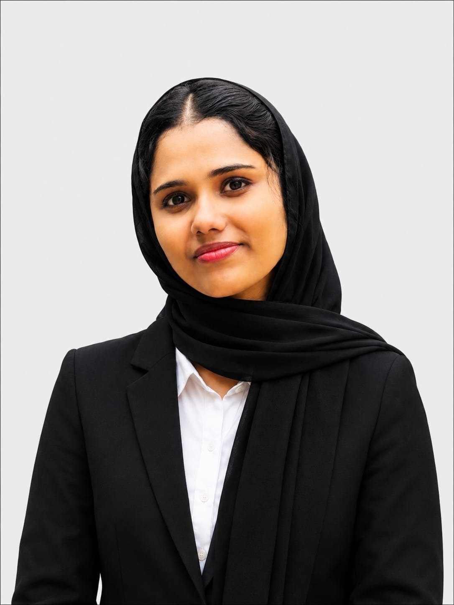

2026 — PRESENT
Academic Coordinator
FLP LABS
Coordinate academic programs, project mentoring, internships, training activities and technical learning initiatives. Act as a bridge between students, technical teams and school management.
Academic Coordinator / Technical Executive / Postgraduate
Electronics professional coordinating academic programs, technical mentoring and project-based STEM learning at FLP Labs.

I work at the intersection of electronics, STEM education and academic coordination.
As an Academic Coordinator at FLP Labs, I support academic programs, project mentoring, internships and technical learning initiatives. I connect students, technical mentors and school management so projects move from planning to completion.
My hands-on background spans robotics, electronics, IoT, Arduino, ESP32, AI, AR/VR and circuit design.
Scheduling, task allocation, stakeholder communication, documentation and issue resolution across academic programs.
Guiding students through robotics, electronics and STEM projects from concept to working prototype.


Coordinate academic programs, project mentoring, internships, training activities and technical learning initiatives. Act as a bridge between students, technical teams and school management.
Delivered hands-on STEM and robotics learning. Designed and guided student activities involving robotics, AI, AR/VR, electronics and circuit designing.
Progressed through increasing responsibility in technical execution, mentoring, project delivery and academic coordination.
ESP32 · WATER MANAGEMENT
ESP32-based water-recycling project using filtration methods to treat used household water for gardening, flushing and toilet cleaning.
ARDUINO · HEALTH TECH
Arduino-based automatic health-monitoring concept delivering quick health-status readings through an interactive mirror.
IoT · CONNECTED LIVING
IoT-based project focused on monitoring and controlling household applications through connected electronics.
ARDUINO · AUTOMATION
Automatic lighting system designed to control streetlights according to environmental conditions.
MES College Marampally
Mahatma Gandhi University
MES College Marampally
Mahatma Gandhi University
Mahatma Gandhi University.
MES Grand Fiesta, 2024.
Prajyoti Niketan College, 2024.
Advanced from Technical Executive to Senior Technical Executive and Academic Coordinator at FLP Labs.
Open to opportunities in academic coordination, technical training and STEM project leadership.
Get in touch ↗